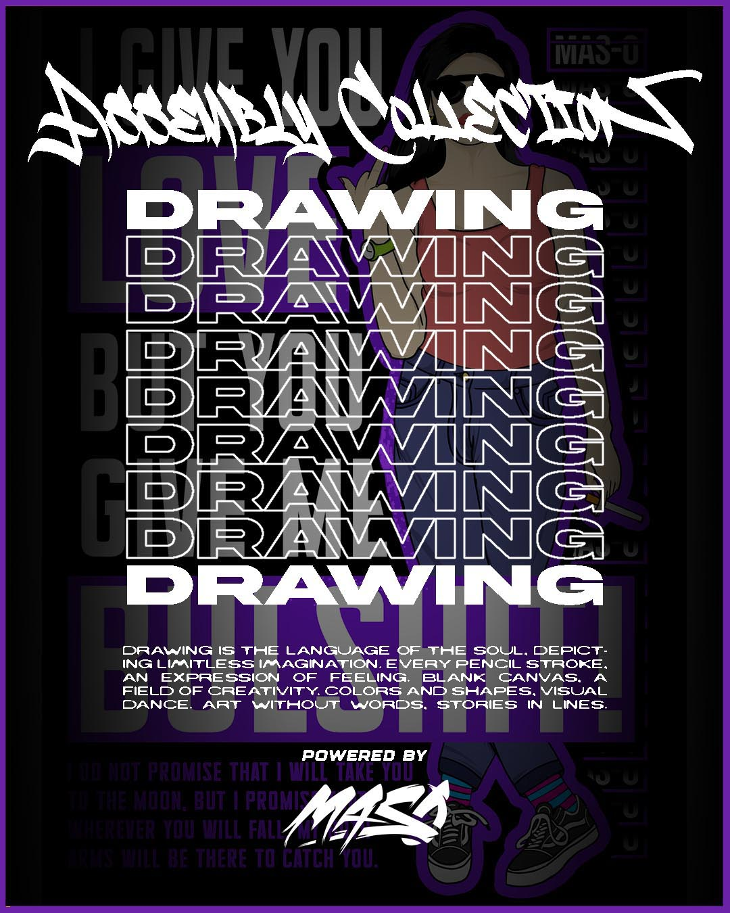
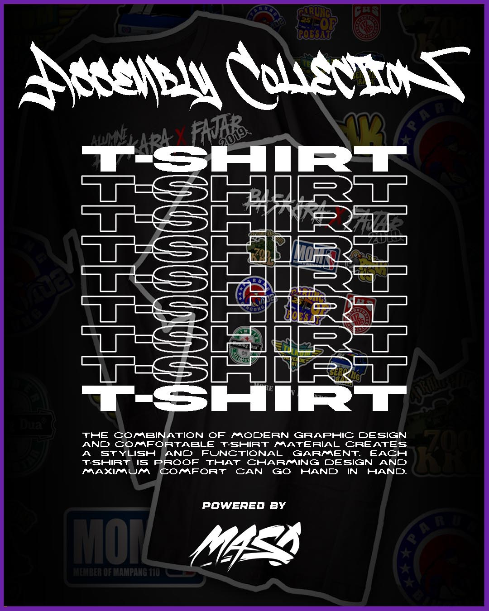

JEJAK VISUAL & PROSES
Manifestasi Ide dalam Piksel
Selamat datang di arsip visual gua. Di sini lo bakal nemuin hasil dari malam-malam panjang, berliter-liter kopi, dan semangat buat terus eksplorasi. Isinya mungkin nggak seformal dokumen resmi, tapi tiap pikselnya adalah bukti dedikasi gua dalam belajar dan menciptakan sesuatu.
Enjoy the journey!

Typography adalah seni dan teknik menata huruf serta teks dalam suatu ruang untuk menciptakan visual yang menarik, mudah dibaca, dan efektif menyampaikan pesan.

Membentuk citra dengan menggunakan alat dan teknik tertentu. Menggambar juga bisa diartikan sebagai membuat tanda-tanda pada permukaan dengan mengolah goresan dari alat gambar.

Punya ide desain baju yang pengen diwujudkan? Aku pernah bikin beberapa project desain baju dan mungkin bisa bantu kamu.

Hanya desain amatir, tapi saya senang bisa mencoba. Semoga bisa lebih baik lagi ke depannya.